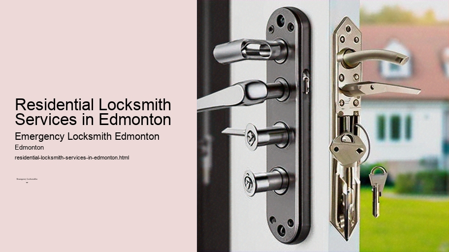

News
24/7 Emergency Locksmith Services
24/7 Emergency Locksmith Services
Emergency Locksmith Services
Residential lockout assistance
Automotive lockout services
Broken key extraction
Emergency lock repair and replacement
Commercial Locksmith Solutions in Edmonton
Commercial Locksmith Solutions in Edmonton
Highsecurity lock installations
Master key systems and rekeying services
Access control system integration
Panic bar installation and maintenance
Residential Locksmith Services in Edmonton
Residential Locksmith Services in Edmonton
Home lockout response
Rekeying existing locks for homes
Installation of new locks and deadbolts
Repairing or replacing residential locks
Automotive Locksmith Services in Edmonton
Automotive Locksmith Services in Edmonton
Car key duplication and replacement
Transponder key programming
Ignition repair and replacement services
Vehicle trunk opening
About Us

Residential Locksmith Services in Edmonton
>
Automotive locksmith Edmonton
Residential Locksmith Services in Edmonton: Securing Your Home Sweet Home
Home is not just a place, it's a feeling of safety and security.
Gate lock repair and installation Edmonton
It's where we unwind after a long day, spend time with our loved ones, and keep our personal belongings. As homeowners or renters in Edmonton, we understand the importance of protecting our private sanctuary.
Key cutting service Edmonton
This is where residential locksmith services play an essential role in ensuring that our homes remain secure and impenetrable to unauthorized access.
Edmonton is known for its vibrant culture and harsh winters, which can take a toll on physical structures, including locks and security systems.
Peephole installation Edmonton
The extreme weather conditions often necessitate routine maintenance and occasional repairs of home security apparatuses.
Affordable locksmith Edmonton
Deadbolt installation Edmonton
Residential locksmiths are professionals who specialize in this type of maintenance, repair, installation, and emergency services for everything related to your home’s locks and keys.
One of the primary offerings by residential locksmiths is lock replacement and rekeying services.
Lock maintenance service Edmonton
Over time or due to security concerns such as lost keys or break-in attempts, there may be a need to change the locks on doors and windows. Whether you're moving into a new home or looking to upgrade your current locking mechanisms for enhanced security features like smart locks or high-security deadbolts – trained locksmiths can provide expert advice on the best options available tailored to your needs.
Another critical service provided by residential locksmiths in Edmonton is emergency lockout assistance.
CCTV installation services Edmonton
Automotive locksmith Edmonton
Picture this: You've stepped out to quickly grab something from your car or check the mail; the door shuts behind you - it dawns on you that you've left your keys inside. Rather than succumbing to panic or attempting to break into your own house (which could lead to injury or damage), professional locksmiths offer swift response times for such predicaments, helping you regain access without any damage.
In addition to these services, residential locksmiths also cater to more specialized requirements such as installing safes for valuable possessions, setting up master key systems that allow multiple locks to be opened with one key while maintaining individual unique keys per lock if needed – ideal for landlords managing several rental units.
Security enhancement extends beyond mere mechanical upgrades; many residential locksmith companies now incorporate advanced technology solutions into their offerings. With smart home technology becoming increasingly popular among Edmonton residents interested in upgrading their home security systems with digital keypad entry systems, fingerprint recognition locks or remote-controlled smart locks compatible with smartphones are becoming commonplace installations performed by skilled technicians.
A lesser-known but equally important aspect handled by these experts includes window lock repairs – an often-overlooked element when considering home security. Windows are potential entry points for intruders; hence having robust locking mechanisms in place can significantly improve overall household protection.
Given the sensitivity associated with work involving one's personal living space privacy policies are strictly adhered too by reputable residential locksmith service providers—ensuring that all operations are conducted discreetly respecting clients' privacy at all times.
Customer education forms an integral component of what makes excellent residential locksmith services stand out from merely good ones In addition educating clients about preventive measures like never hiding spare keys around exteriors proper maintenance tips alongside innovations within industry aids building trust while empowering customers towards proactive involvement regarding their domestic safety protocols
Choosing right provider therefore involves checking certifications experiences reviews plus availability 24/7 since emergencies don't abide regular business hours Furthermore costs should transparent upfront without hidden charges ensuring financial clarity peace mind part customer experience
In conclusion securing one's abode Edmonton requires partnership reliable knowledgeable trustworthy residential locksmith Enlisting specialized aid ensures efficient resolution diverse range issues related home entryway integrity From simple rekeying job complex integration modern smart-lock technologies seasoned professionals have tools skills necessary safeguard most precious asset —our homes
Check our other pages :
Emergency lock repair and replacement
Installation of new locks and deadbolts
Commercial Locksmith Solutions in Edmonton
Frequently Asked Questions
What emergency locksmith services are available for residential customers in Edmonton?
Emergency locksmith services in Edmonton typically include lockout assistance if youre locked out of your home, lock repair or replacement after a break-in or malfunction, rekeying locks when keys are lost or stolen, and providing immediate solutions for broken key extraction from locks.
How quickly can an emergency locksmith arrive at my location in Edmonton?
Most emergency locksmiths in Edmonton offer rapid response times, often arriving within 30 minutes to an hour. However, the exact time can vary based on the specific location within the city and current demand for services.
Are emergency residential locksmith services available 24/7 in Edmonton?
Yes, many locksmiths provide 24/7 emergency services for residential customers in Edmonton. This ensures that you have access to professional help any time of day or night for urgent situations like lockouts or security issues.